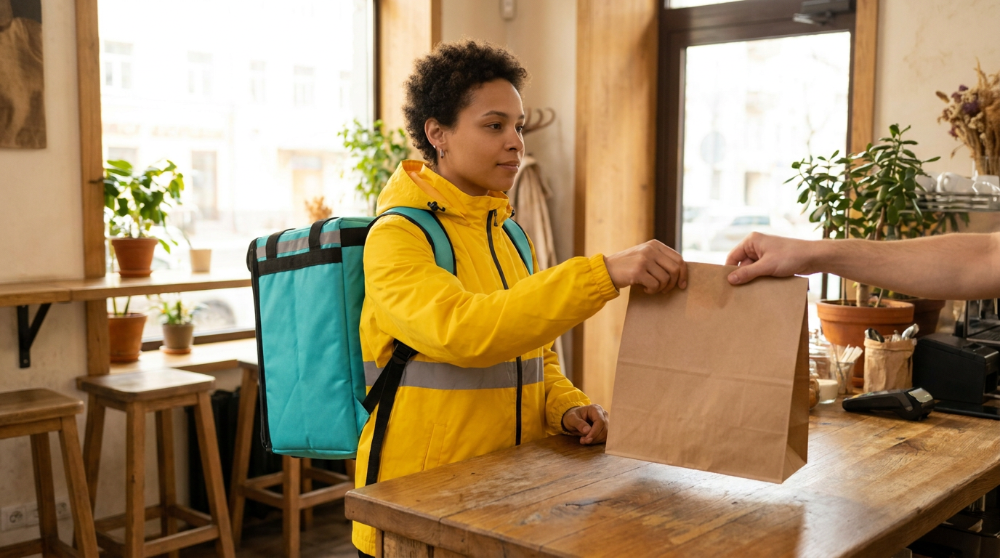
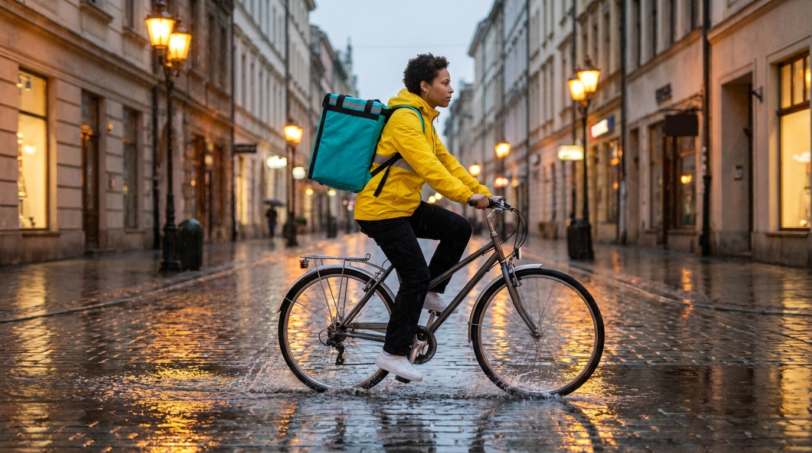
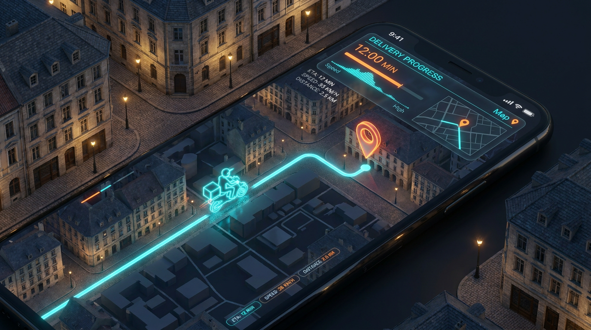
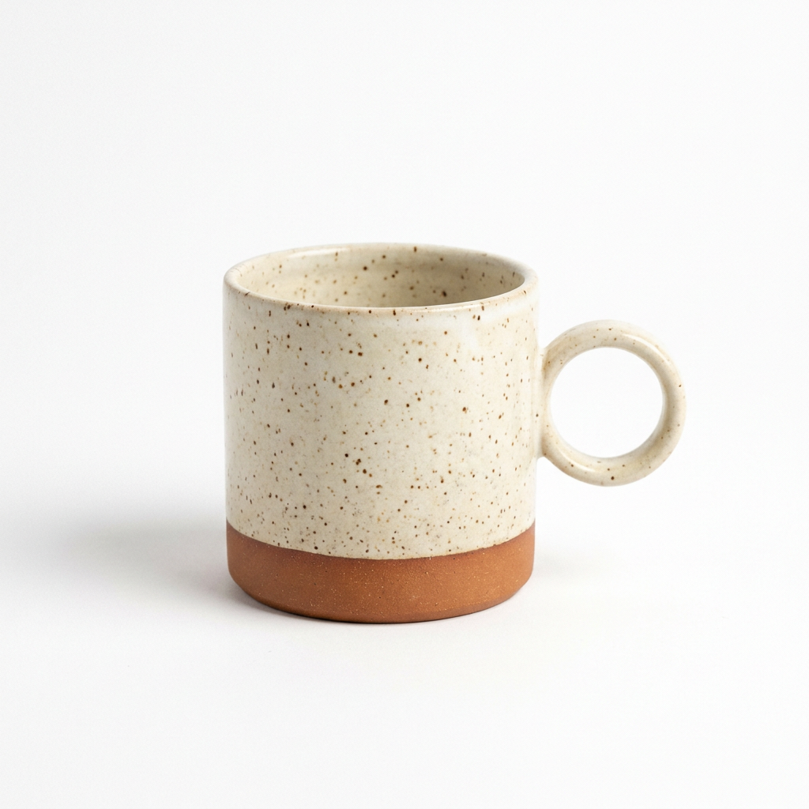
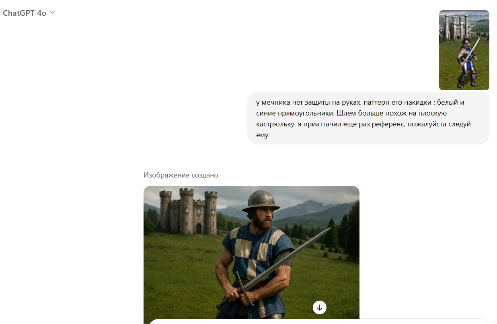
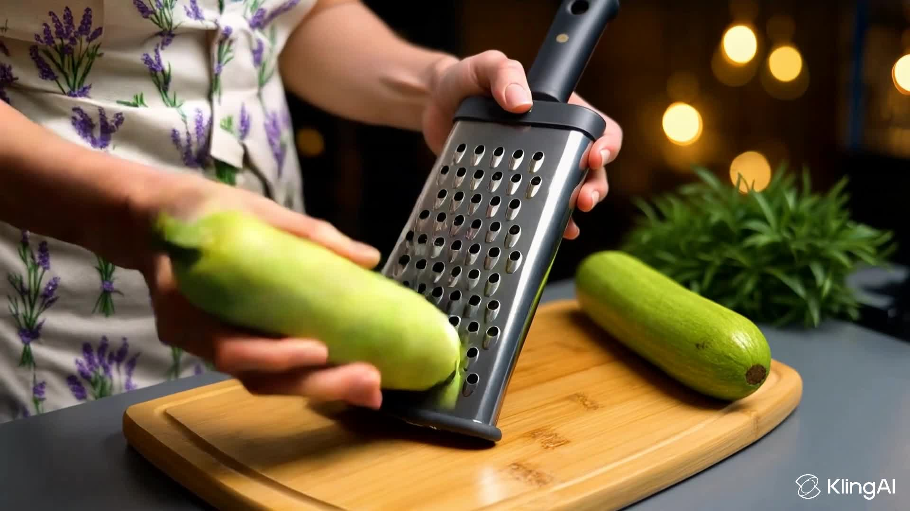
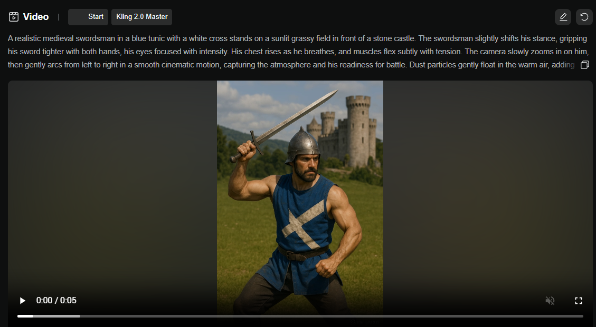
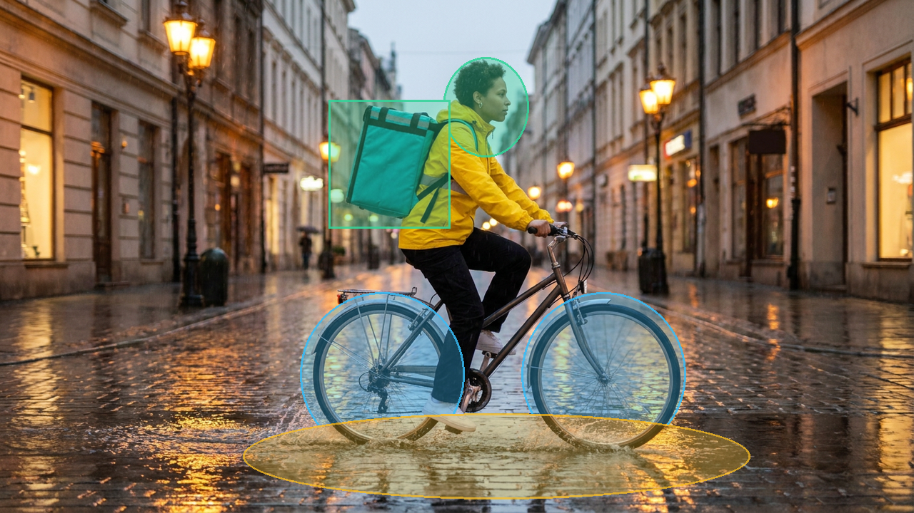
Генерация видео: от статики к управлению пространством и временем
Модели, интерфейсы студий, кинематографические промпты и контроль движения
Остальные 90% — это подготовка ключевого кадра (I2V), векторы траектории камеры, локальные маски (Motion Brush) и монтажная склейка шотов.
Угадайте: где съемка на камеру, а где диффузионный ИИ?
Внимательно посмотрите на 4 стоп-кадра. Напишите в чат буквы тех кадров, которые сняты реальной оптикой!
Три уровня экосистемы видео-ИИ: Чат, Студия и Cloud API
Как устроен ландшафт генерации видео: от быстрых концептов в чате до студийных канвасов и облачных конвейеров
• Паттерн: Диалоговый подбор мудборда и идей
• Экономика: $20/мес фикс без посекундной тарификации
• Архитектурный барьер: Стохастический дрифт между сидами
• Паттерн: Визуальный таймлайн, маски, управление камерой
• Экономика: Пакеты кредитов ($0.15–$0.50 за дубль)
• Архитектурный барьер: Ручной UI-труд, сложность масштабирования
• Паттерн: Headless JSON-контракты, параллельные очереди GPU
• Экономика: Посекундная оплата инференса GPU ($/сек)
• Архитектурный барьер: Требует валидации схем и оркестрации
Пайплайн создания видео и экономика GPU-кредитов
Дисциплинированный 90-минутный рабочий процесс коммерческого продакшна против фатальной экономики наивного Text-to-Video
| # | Фаза продакшна | Рабочий инструмент | Время |
|---|---|---|---|
| 01 | Визуальные референсы и якоря стиля | ArtStation, Pinterest | 10 min |
| 02 | Утверждение ключевого кадра в Chat UI | ChatGPT 4o / Midjourney | 10 min |
| 03 | Анимация движения шота через I2V | Kling AI / Runway Studio | 15 min |
| 04 | Генерация звуковых дорожек и Foley FX | Suno AI & ElevenLabs (Урок 06) | 15 min |
| 05 | Монтаж на таймлайне и склейка сцен | CapCut / Premiere / FFmpeg | 20 min |
| 06 | Проверка водяных знаков и аудит C2PA | SynthID и аудит C2PA | 5 min |
| 07 | Финальный рендер и экспорт форматов | 16:9 Landscape / 9:16 Reels | 15 min |
• Сгорание баланса: 20 пустых перегенераций по $2.50 = $50 слито в корзину за пару минут.
• Срыв дедлайнов: Бесконечный стохастический перебор без гарантии сходимости.
• Неконтролируемый дрейф: Без заморозки t=0 внимание модели мутирует логотипы и освещение между кадрами.
• Множитель затрат: Подбор промпта в видео стоит в 50–100 раз дороже, чем в генерации картинок.
• Фиксация геометрии: Утвержденный кадр замораживает пространственные латенты.
• Промышленная надежность: Экономия в 10 раз, ускорение в 4 раза, 100% защита бренда.
Почему генерация без визуальных референсов обречена на провал
Сбор 5–10 якорей стиля для фиксации оптики, освещения и палитры до запуска диффузии видео
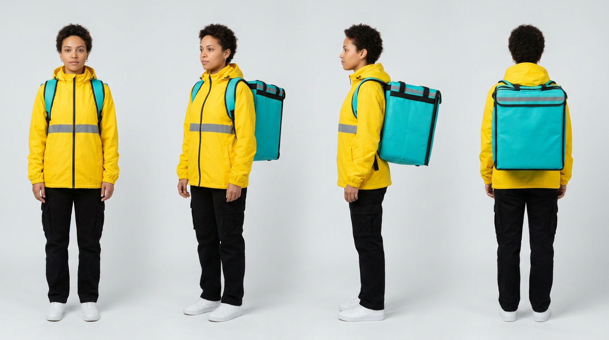
Фиксация одежды, палитры, пропорций и ракурсов перед запуском видеогенератора
• 2. Фирменный стиль: Желтая куртка (#fbbf24) и бирюзовый терморюкзак (#38bdf8).
• 3. Физика света: Утренний рассеянный свет 5600K, блики на мокрой брусчатке.
• 4. Оптика камеры: 24mm широкоугольный трекинг, глубина резкости f/2.8.
• 5. Биометрический замок: Черты лица заморожены против стохастического дрейфа.
• Схлопывание многообразия: Референс-лист из 4 ракурсов сужает вариативность латентов на 80%+ и удерживает генерацию на целевом многообразии бренда.
• Шаг 2: Синтез кругового листа персонажа в Midjourney (--cref) или ChatGPT 4o.
• Шаг 3: Прикрепление референс-листа в Kling AI / Runway как пространственного якоря.
• Шаг 4: Валидация всех 4 ракурсов (анфас, профиль, 3/4, спина) на сохранение логотипов.
• Конкретные физические дескрипторы: Задавайте физические сущности:
ПЛОХО: «эпичный фотореалистичный курьер едет на велосипеде»
ХОРОШО: «24mm f/2.8, свет 5600K, куртка рипстоп нейлон #fbbf24, мокрый асфальт»
Итеративное уточнение ключевого кадра: от спрайта к якорю 16:9
Реальный кейс: загрузка 2D спрайта в ChatGPT 4o и доводка до кинематографичного кадра через текстовый диалог
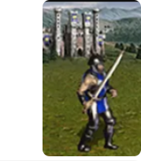
«Роль: концепт-артист кино. Вход: спрайт героя. Задача: реалистичная 16:9 сцена 4K, естественный свет, сохранение костюма»
• Промпт: Запрос фотореалистичной 16:9 сцены с сохранением цветов и костюма.
• Результат: Модель выдает черновой кинематографичный рендер.
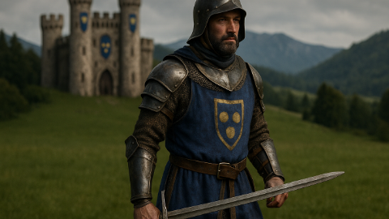
• Ошибка 1: Лишние стальные латы на руках
• Ошибка 2: Шлем искажен в сферу
• Правка: «Убрать латы, накидка в шашечку, плоский шлем»
• Правка: «У мечника нет брони на руках, накидка в шашечку, плоский шлем-котелок».
• Скорость: Мгновенная перегенерация через естественный диалог за $0.04.
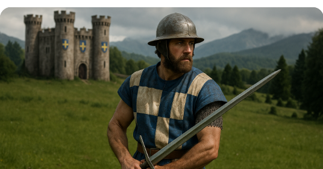
• Личность: Накидка в шашечку и плоский шлем зафиксированы
• Окружение: Замок и горы привязаны к геометрии
• Статус: Заморожен как якорь I2V (Брак: 0%)
• Фиксация: Заморожен как граничное условие (t=0) для генерации видео.
• Стабильность: Гарантирует сохранение героя во всех дублях видео.
T2V Trainwreck против I2V: физика ошибок и геометрия
Наглядное сравнение: наивный текстовый «поток сознания» против дисциплинированного кадра Image-to-Video
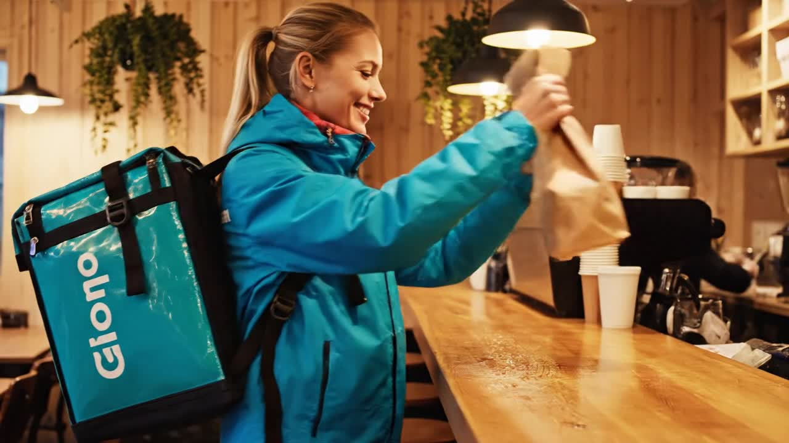
• Мутация бренда: Логотип Glovo расплылся в нечитаемый мусор «Giono».
• Причина сбоя: При генерации из чистого шума модель сэмплирует и форму, и движение одновременно без 3D-тензора геометрии — топология рвется!
• Стабильная физика: Пальцы четко держат крафтовый пакет без расплавления.
• Причина успеха: Первый кадр заморожен как граничный инвариант (t=0). Модель вычисляет только вектор скорости движения (dx/dt)!
Режиссерский промпт: формула 6 слотов движения
Структурированная спецификация пространства и времени исключает физические галлюцинации более чем на 85%
| Слот | Назначение | Пример ключевых слов | Инженерный смысл |
|---|---|---|---|
| [1. Scene] | Контекст среды | Sunlit cafe interior, daylight | Задает границы геометрии |
| [2. Character] | Якорь героя | Courier in yellow jacket | Связывает латенты с I2V |
| [3. Delta dx/dt] | Физика движения | Smoothly lifts bag, turns | Глаголы действия, не эпитеты! |
| [4. Camera] | Траектория | Tracking shot, dolly pull-back | Синхронизирует параллакс |
| [5. Optics] | Глубина и частицы | 24fps blur, dust motes, bokeh | Маскирует шум DiT модели |
| [6. Negative] | Отсечение брака | no morphing of hands, steady | Подавляет коллапсы формы |
• 2. Ноль тавтологии с ключевым кадром: Не переописывайте одежду и цвета, уже замороженные в I2V. Описывайте строго дельту во времени (dx/dt).
• 3. Обязательные негативные границы: Всегда отсекайте паразитное вращение назад, деформацию пальцев и дрожание линзы.
8 стандартных движений камеры: 3D-траектории и оптика
Видеомодели обучены на профессиональных кинодатасетах. Стандартные термины дают точный пространственный параллакс
Ведущие видеостудии: Kling, Runway, Luma и Leonardo
Сравнение ключевых творческих веб-интерфейсов для коммерческого продакшна и режиссуры движения
• Motion Brush: Точные векторы скорости для локальных зон кадра.
• Продление шотов: Нативное увеличение длительности до 10 сек без срывов.
• Freeze Mask: Скорость 0.0 для лиц и логотипов
• Камера: 6-осевые пресеты траекторий
• First/Last Frame: Точная интерполяция между двумя ключевыми кадрами.
• Режиссура: Высокоуровневый кинематографический контроль сцены.
• First/Last Frame: Интерполяция между 2 кадрами
• Director Mode: Ползунки скорости и кинематографики
• Твердые тела: Высокая устойчивость жестких 3D-объектов и упаковки.
• Orbit 360: Чистый непрерывный круговой облет товаров без деформации.
• Быстрая диффузия: Рендер 30с для быстрых итераций
• Rigid Bodies: Высокая устойчивость жестких 3D тел
• Motion Slider: Тонкая шкала силы движения (1–10) для микро-анимации.
• Генерация звука: Встроенный синтез базовых звуковых дорожек.
• Motion Slider: Шкала силы движения 1–10
• Встроенный звук: Прямой синтез эмбиент-дорожки
Motion Brush: разделение траекторий колес, воды и лица
Решение проблемы паразитного движения: назначаем раздельные векторы скорости разным зонам кадра
Синяя: колеса (X = +4) • Желтая: брызги луж (Y = +3) • Зеленая: лицо и сумка (Speed = 0)
• Физический вектор: Вектор смещения вперед (X = +4.0, Y = 0.0).
• Настройки UI: Кисть 1 • Жесткий край • Линейное смещение.
• Результат: Колеса крутятся реалистично, геометрия рамы сохранена.
• Физический вектор: Гидродинамический всплеск вверх (X = +1.5, Y = +3.0).
• Настройки UI: Кисть 2 • Мягкий градиент • Турбулентная дисперсия.
• Результат: Капли воды разлетаются по реалистичной параболической дуге.
• Физический вектор: Скорость строго заблокирована (Скорость = 0.0).
• Настройки UI: Static Freeze Mask • Полная фиксация координат.
• Результат: 100% защита от деформации анатомии лица и мутации логотипа.
5 минут на кофе и отдых для глаз
Строгое правило: ноль задач в чате и ноль вопросов во время паузы. Полная перезагрузка внимания перед второй частью
Матрица шотов: как собирается 3-шотовый рекламный ролик
Дисциплина монтажа: вместо одного нестабильного 15-секундного дубля мы генерируем 3 коротких идеальных шота
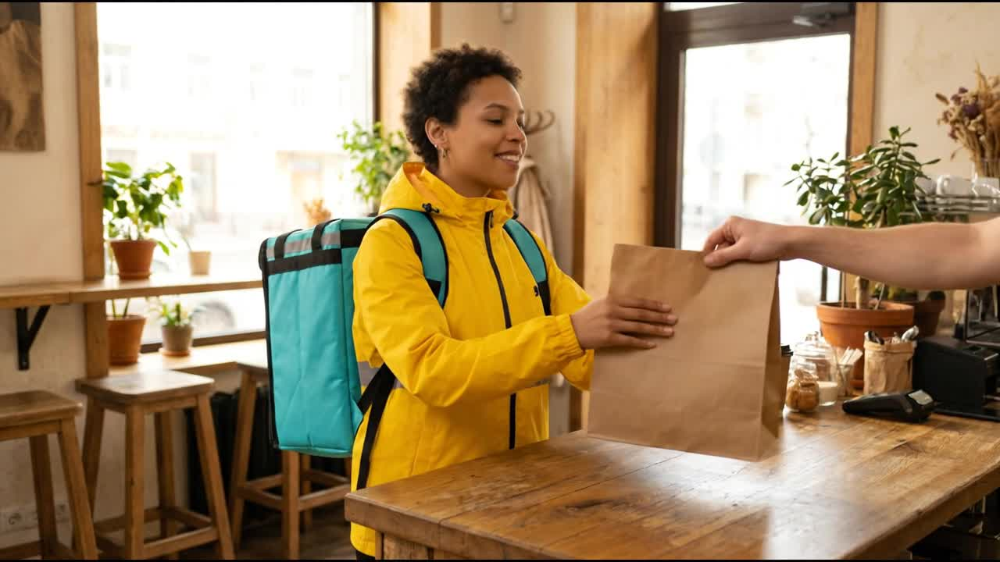
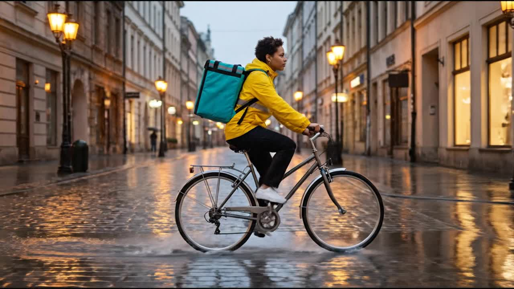
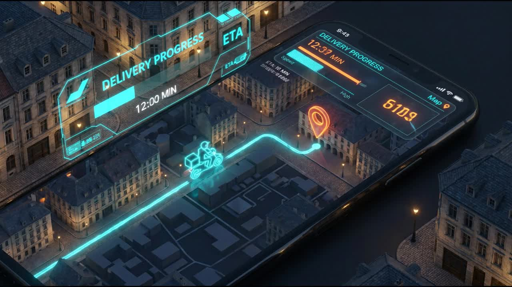
Светофор рисков и цифровая подлинность: SynthID и C2PA
Где видео-ИИ безопасен и запрещен, и как криптографические манифесты подтверждают происхождение видео
• Разрешенные модели: Kling Standard, Runway Gen-3, Luma Dream Machine.
• Протокол проверки: Автоматический фильтр на запрещенные бренды; ручной аппрув не требуется.
• Юридическая ответственность: Нулевой коммерческий риск; материалы для внутреннего пользования.
• Обязательный аудит: Покадровый чек-лист (пальцы, зубы, отражения, геометрия логотипа).
• Ворота согласования: Обязательная подпись Creative Director или Lead QA перед сдачей клиенту.
• Вектор риска: Репутационный ущерб от расплавленных пальцев или искажения логотипа бренда.
• Юридические риски: Уголовная и гражданская ответственность по EU AI Act (Статьи 50/52).
• Штрафы: До €35 млн или 7% мирового годового оборота компании.
• Регламент защиты: Блокировка на уровне CI/CD репозитория, немедленная эскалация в EPAM Legal.
• Стойкость: Выдерживает сжатие MP4/HEVC, перекодирование битрейта, кадрирование и цветокоррекцию.
• Верификация: Нейросетевой детектор вычисляет калиброванную вероятность (0.00–1.00) без доступа к оригиналу.
• Криптографическая привязка: Хеш видео (SHA-256) подписывается сертификатом X.509 и упаковывается в MP4.
• Линейка происхождения: Фиксирует версию базовой модели, сид, хеш кадра, инструменты и таймстамп.
• Визуальный фильтр: Чек-лист из 5 пунктов: (1) контакт пальцев, (2) отражения, (3) логотипы, (4) дрожание границ, (5) липсинк.
• Репозиторий артефактов: Хранение мастер-рендеров, исходных сидов и подписанных манифестов C2PA в архиве.
Дерево решений: выбор оптимальной видеомодальности
4 диагностических вопроса для экономии часов GPU-рендеринга и предотвращения слива бюджета
• Маршрут: ДА ➔ HeyGen / Hedra (Lip-Sync). Запрещена диффузия всего тела!
• Экономия: Экономит 95% GPU-вычислений и исключает деформацию челюсти.
• Маршрут: ДА ➔ Строго Image-to-Video (I2V). Заморозьте 2D-кадр в Chat UI ($0.04)!
• Результат: Снижение брака с 80% до менее 15%; ноль мутаций логотипа.
• Маршрут: ДА ➔ Разрешен Text-to-Video (T2V) по 6-слотовой формуле промпта.
• Обоснование: У природных сред нет жестких инвариантов топологии и геометрии.
• Маршрут: ДА ➔ Cloud API (Google Veo 3.1 / Wan 2.2) с детерминированными сидами.
• Требование: Строгие JSON-схемы, валидация данных и очереди задач GPU.
• Сфера: Аватары, онбординг, мультиязычный дубляж курсов без пересъемки.
• Плюс: Идеальная синхронизация губ, ноль морфинга тела, рендер за 30 сек.
• Сфера: Рекламные шоты, экшен курьера, коммерческие презентации брендов.
• Плюс: 100% сохранение анатомии лица, костюма и логотипа компании.
• Сфера: B-roll перебивки, видео-обложки веб-сайтов, абстрактные переходы.
• Плюс: 30-секундный рендер, непрерывная динамика жидкостей и частиц.
• Сфера: Программные каталоги товаров e-commerce, персонализация медиа.
• Плюс: Автоматическое масштабирование, корпоративные SLA, логирование.
Домашнее задание: анимация героя или товарного пакшота
Сдача в genai-homeworks/L05/. Дедлайн: до следующего занятия. Коллаборатор: ihar_rubanovich@epam.com
• Движение: Плавный круговой облет Orbit 360, пар над кофе, блики света по керамике.
• Инвариант: Логотип бренда обязан оставаться идеально четким на всем 5с клипе!
• Инструмент: Luma Dream Machine (режим Orbit) или Kling AI Image-to-Video.
• 2. Промпт: Составление 6-слотового режиссерского промпта с активными глаголами.
• 3. Маски: В Kling/Runway настройка Motion Brush для активных зон и Freeze Mask для логотипа.
• 4. Аудит: Рендеринг в 2 разных инструментах и заполнение отчета контроля качества.
• Движение: Трекинг Truck Left параллельно скорости велосипеда, брызги луж на асфальте.
• Инвариант: Маска Speed-0 Freeze Mask на лицо и рюкзак курьера против мутаций бренда.
• Инструмент: Kling AI 1.5 (Pro mode) или Runway Gen-3 Alpha.
• video_spec.md: 6-слотовые промпты, векторы камеры, сиды, хронометраж шотов.
• video_qa.md: Сравнительная таблица аудита дефектов по 5 параметрам качества.
├── videos/
│ ├── track_a_kling.mp4 [5s, 1080p, Orbit 360]
│ └── track_a_runway.mp4 [5s, 1080p, Orbit 360]
├── video_spec.md [Промпты, сиды, векторы]
└── video_qa.md [Таблица аудита артефактов]
• 30 баллов — Траектория камеры: Точное следование заданному движению (Orbit 360 / Truck Left).
• 20 баллов — Физика сред: Правдоподобная гидродинамика жидкостей (пар, брызги луж).
• 10 баллов — Сравнительный отчет: Аргументированный технический анализ в video_qa.md.
git add videos/ video_spec.md video_qa.md
git commit -m "feat(L05): multi-tool video synthesis benchmark"
git push origin homework/L05-<фамилия> && gh pr create
Четыре правила видео и анонс Урока 06: Звук и Речь
Сегодня все наши ролики были абсолютно немыми. На следующем занятии мы вдохнем в них жизнь звуком!
• Механика: Фиксация начального тензора t=0 снижает энтропию латентов на 80%+ и устраняет брак.
• Правило: Не переописывайте внешность, фон или одежду, уже замороженные в ключевом кадре.
• Отказ: Никогда не пытайтесь генерировать 15-секундный непрерывный ролик в одном промпте.
• Ловушка: Слепой Text-to-Video сжигает $50–$100 на случайных рероллах с 80%+ процентом брака.
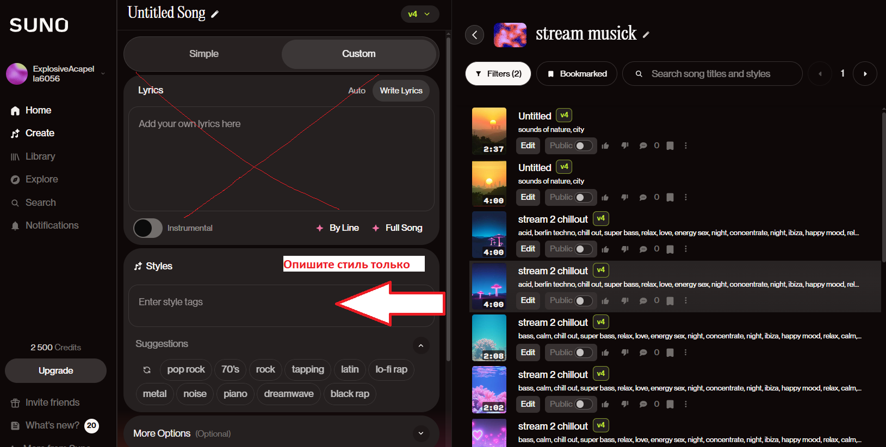
• Suno & Udio: генерация музыки по стилям без авторских прав.
• Foley Sound FX: шум дождя, шуршание шин, звон чашек в кафе.
• Lip-Sync: точная синхронизация губ курьера под речевую дорожку!